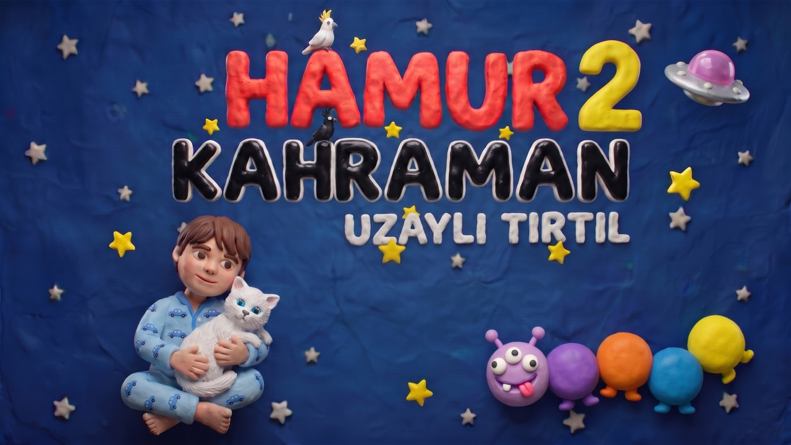
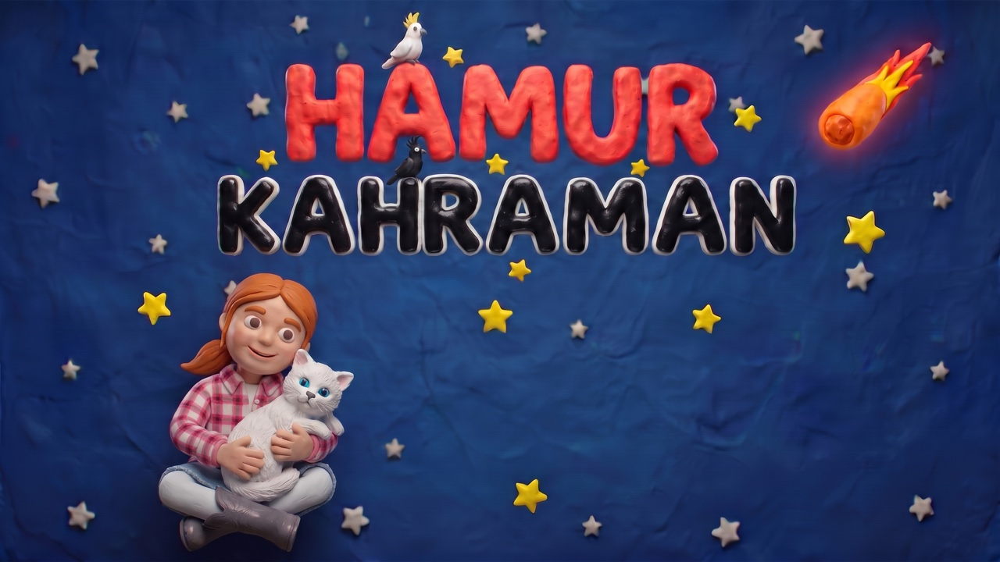

1 · İstanbul
Meteorla gelen kötüleri İstanbul sokaklarında durdur. Koş, zıpla, uç!
▶ Oyna
2 · Uzaylı Tırtıl
Vıcık geliyor! Şekerleri patlat, taşları dök, kahramanına yol aç. 8 kahramandan birini seç.
▶ Oyna
Aslı Beliz'in oyunu
İstanbul macerası, bu sefer kahraman Aslı Beliz.
▶ Oyna